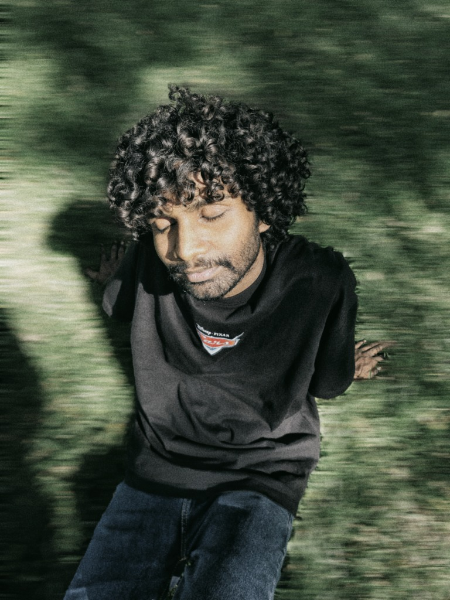

01
Where I began
My first professional role was in 3D, working with camera animation, terrain, and environments. Later, texturing gave me a closer understanding of materials and surface detail—knowledge I still bring to image-making.
3D Artist / Film Editor / DI Colorist
I’m Mahadeva Muthabathula, a 3D artist, film editor, and DI colorist. My work spans asset creation, texturing, editing, and the final color of a film.
View selected work
3D / Edit / Color
M
MM
I’m Mahadeva Muthabathula, a creative professional working across 3D art, texturing, film editing, and digital intermediate (DI) color.
I began in 3D production, moved into texturing, and later took on film editing and DI projects. I’m now a DI Colorist and Editor at VijayEesam, where I work on grading, shot matching, and look development. Each part of that path has taught me to look closely at how images are built and how they work together.
01
My first professional role was in 3D, working with camera animation, terrain, and environments. Later, texturing gave me a closer understanding of materials and surface detail—knowledge I still bring to image-making.
02
I value clear communication, attention to detail, and a shared understanding of the project. In post-production, I work to keep the edit and grade aligned with the director’s intent.
Professional experience
My experience spans 3D production, texturing, independent film work, and DI finishing. Here’s how that work has developed over time.
October 2023 — June 2024
PlayVRoom Studio
I worked in Unity on camera animation and environment setup, including terrain creation and basic sound-effects work in C#.
July 2024 — January 2025
Maha Movies
I led the texturing department, using Substance Painter and Designer to create and refine asset surfaces.
February 2025 — March 2026
Independent projects
I took on independent film-editing and DI projects, working with directors and producers through post-production.
March 2026 — Present
VijayEesam
I work on color grading, shot matching, and look development alongside teams at Love Collective, StarDust, and Magnum.
Every image has a job to do.
My approach is to understand that purpose first, then make choices that support it. In 3D, editing, and color, I pay attention to how each detail contributes to the finished image.
Understand the brief, the audience, and what the image needs to communicate.
↗Build the work carefully, from the broad composition down to the details.
↗Keep visual choices consistent with the direction and tone of the project.
↗Share progress clearly and carry the work through to a considered finish.
↗For 3D, texturing, editing, or DI color work, share a few details about your project and what you need. I’m based in Visakhapatnam, India, and open to hearing about new opportunities.